Code
library(readxl)
plants <- read_excel("EHA_Monthly_Net_Generation.xlsx",
sheet = "MonthlyNet")This is a part 2 to the Hydropower Project I did before.
I am importing my data on the total number of Conventional Hydropower Plants in the US and Monthly Precipitation.
library(readxl)
plants <- read_excel("EHA_Monthly_Net_Generation.xlsx",
sheet = "MonthlyNet")library(fpp3)── Attaching packages ────────────────────────────────────────────── fpp3 0.5 ──✔ tibble 3.1.8 ✔ tsibble 1.1.3
✔ dplyr 1.1.0 ✔ tsibbledata 0.4.1
✔ tidyr 1.2.0 ✔ feasts 0.3.1
✔ lubridate 1.8.0 ✔ fable 0.3.3
✔ ggplot2 3.3.5 ✔ fabletools 0.3.3── Conflicts ───────────────────────────────────────────────── fpp3_conflicts ──
✖ lubridate::date() masks base::date()
✖ dplyr::filter() masks stats::filter()
✖ tsibble::intersect() masks base::intersect()
✖ tsibble::interval() masks lubridate::interval()
✖ dplyr::lag() masks stats::lag()
✖ tsibble::setdiff() masks base::setdiff()
✖ tsibble::union() masks base::union()plants %>%
select(Year, Month, Net_Generation_MWh, EHA_PtID) -> plantshead(plants)# A tibble: 6 × 4
Year Month Net_Generation_MWh EHA_PtID
<dbl> <chr> <dbl> <chr>
1 2003 APR 0 hc0115_p01
2 2003 AUG 0 hc0115_p01
3 2003 DEC 0 hc0115_p01
4 2003 FEB 0 hc0115_p01
5 2003 JAN 0 hc0115_p01
6 2003 JUL 122 hc0115_p01length(unique(plants$EHA_PtID))[1] 1519plants %>%
group_by(Year, Month) %>%
summarise(Count = n_distinct(EHA_PtID)) %>%
mutate(Date = yearmonth(paste(Year, Month))) %>%
arrange(Date) |>
as_tsibble(index = Date) -> plants2`summarise()` has grouped output by 'Year'. You can override using the
`.groups` argument.plants2# A tsibble: 240 x 4 [1M]
# Groups: Year [20]
Year Month Count Date
<dbl> <chr> <int> <mth>
1 2003 JAN 1386 2003 Jan
2 2003 FEB 1386 2003 Feb
3 2003 MAR 1386 2003 Mar
4 2003 APR 1386 2003 Apr
5 2003 MAY 1386 2003 May
6 2003 JUN 1386 2003 Jun
7 2003 JUL 1386 2003 Jul
8 2003 AUG 1386 2003 Aug
9 2003 SEP 1386 2003 Sep
10 2003 OCT 1386 2003 Oct
# … with 230 more rowsplants2 |>
autoplot(Count)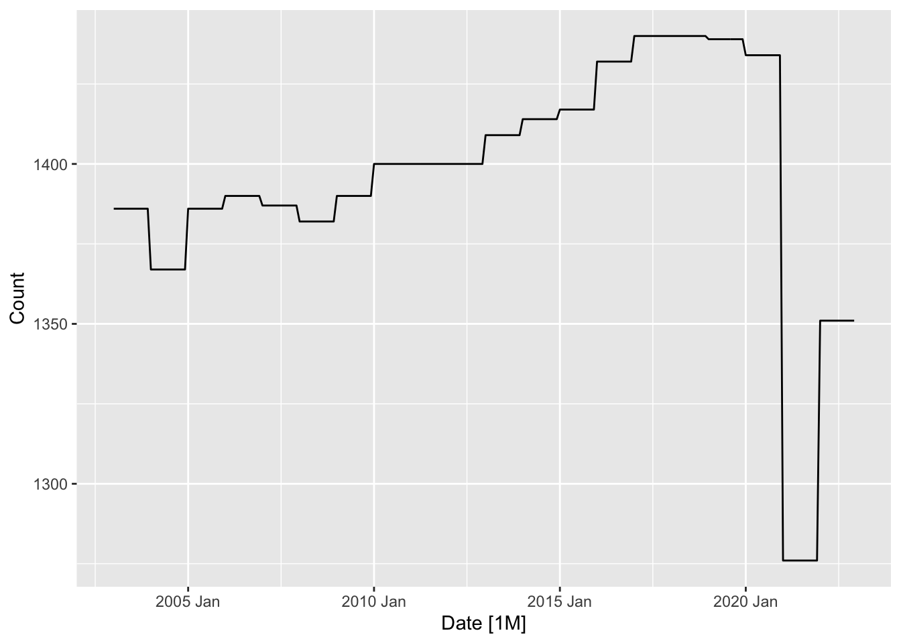
library(readr)
prcpt <- read_csv("Contiguous_us_Precipitation_data.csv",
skip = 4)Rows: 283 Columns: 3
── Column specification ────────────────────────────────────────────────────────
Delimiter: ","
dbl (3): Date, Value, Anomaly
ℹ Use `spec()` to retrieve the full column specification for this data.
ℹ Specify the column types or set `show_col_types = FALSE` to quiet this message.prcpt |>
mutate(date = seq(as.Date("2000-01-01"),
as.Date("2023-07-01"),
by = "month"),
Date = yearmonth(date)) |>
as_tsibble(index = Date) |>
select(Date, Value) -> prcpt2
prcpt2# A tsibble: 283 x 2 [1M]
Date Value
<mth> <dbl>
1 2000 Jan 2.14
2 2000 Feb 2.12
3 2000 Mar 2.44
4 2000 Apr 2.32
5 2000 May 2.66
6 2000 Jun 3.45
7 2000 Jul 2.3
8 2000 Aug 1.91
9 2000 Sep 2.18
10 2000 Oct 2.26
# … with 273 more rowsprcpt2 |>
autoplot() +
labs(title = "Contiguous U.S. Precipitation",
subtitle = "Jan 2001 - Apr 2023, Monthly",
y = "Inches",
x = "Date",
caption = "Source: National Centers for Environmental Information") +
theme_minimal()Plot variable not specified, automatically selected `.vars = Value`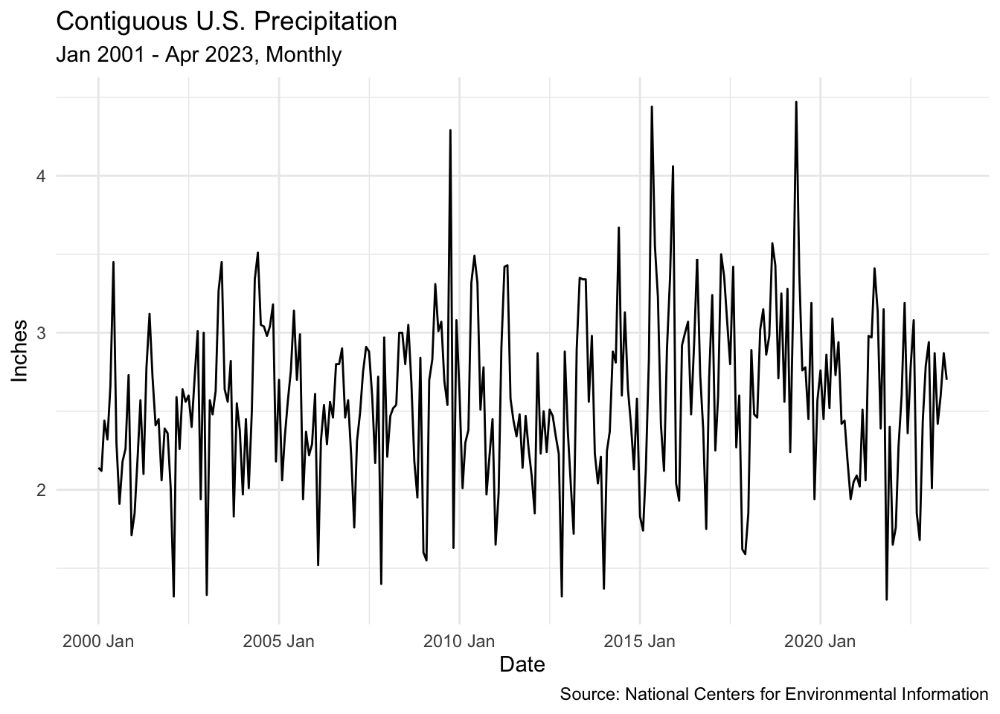
plants3 <- read_csv("RectifHyd_v1.0.csv",
skip = 27)Rows: 324024 Columns: 12
── Column specification ────────────────────────────────────────────────────────
Delimiter: ","
chr (6): plant, state, month, EIA_obs_freq, RectifHyd_method, recommended_data
dbl (6): EIA_ID, year, EIA_fraction, EIA_MWh, RectifHyd_fraction, RectifHyd_MWh
ℹ Use `spec()` to retrieve the full column specification for this data.
ℹ Specify the column types or set `show_col_types = FALSE` to quiet this message.plants3 %>%
select(EIA_ID, plant, year, month) %>%
group_by(year, month) %>%
summarise(Count = n_distinct(plant), .groups = "drop") %>%
mutate(Date = yearmonth(paste(year, month))) %>%
arrange(Date) |>
as_tsibble(index = Date) -> plants3
plants3# A tsibble: 240 x 4 [1M]
year month Count Date
<dbl> <chr> <int> <mth>
1 2001 Jan 1337 2001 Jan
2 2001 Feb 1337 2001 Feb
3 2001 Mar 1337 2001 Mar
4 2001 Apr 1337 2001 Apr
5 2001 May 1337 2001 May
6 2001 Jun 1337 2001 Jun
7 2001 Jul 1337 2001 Jul
8 2001 Aug 1337 2001 Aug
9 2001 Sep 1337 2001 Sep
10 2001 Oct 1337 2001 Oct
# … with 230 more rowswhich(plants3$year==2003)[1][1] 25plants3[1:24,] |>
bind_rows(plants2) |>
select(Count, Date) -> plants_t
plants_t# A tsibble: 264 x 2 [1M]
Count Date
<int> <mth>
1 1337 2001 Jan
2 1337 2001 Feb
3 1337 2001 Mar
4 1337 2001 Apr
5 1337 2001 May
6 1337 2001 Jun
7 1337 2001 Jul
8 1337 2001 Aug
9 1337 2001 Sep
10 1337 2001 Oct
# … with 254 more rowsplants_t |>
autoplot() +
labs(title = "The Total Number of Operational Conventional
Hydropower Plants",
subtitle = "Jan 2001 - Apr 2023, Monthly",
y = "Plants",
x = "Date",
caption = "Source: Existing Hydropower Assets (EHA) Net
Generation Plant Database, 2003-2022; RectifHyd") +
theme_minimal()Plot variable not specified, automatically selected `.vars = Count`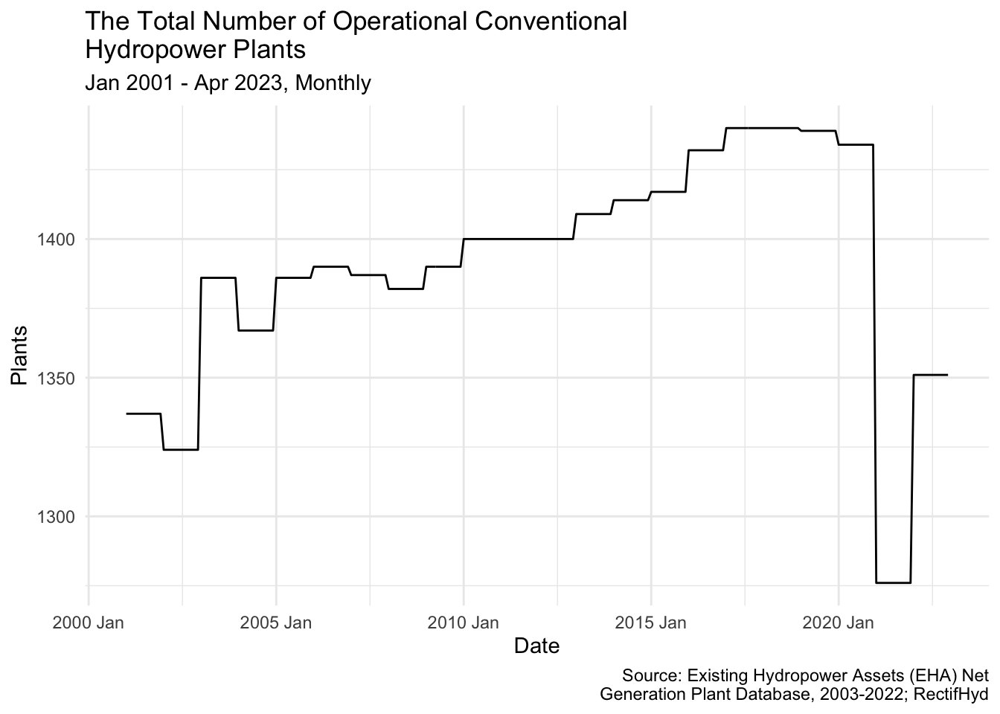
hydro <- read_csv("Net_generation_United_States_all_sectors_monthly.csv",
skip = 4)Rows: 268 Columns: 2
── Column specification ────────────────────────────────────────────────────────
Delimiter: ","
chr (1): Month
dbl (1): conventional hydroelectric thousand megawatthours
ℹ Use `spec()` to retrieve the full column specification for this data.
ℹ Specify the column types or set `show_col_types = FALSE` to quiet this message.I am importing the data on Net Energy Generation.
hydro = hydro %>%
rename(MWH = "conventional hydroelectric thousand megawatthours")hydro=hydro[order(nrow(hydro):1),]hydro = hydro %>%
mutate(Date = yearmonth(Month)) |>
as_tsibble(index = Date)hydro %>%
autoplot(MWH) +
labs(title = "Net Conventional Hydroelectric Power Generation",
subtitle = "Jan 2001 - Apr 2023, Monthly",
y = "Thousand Megawatthours",
x = "Date",
caption = "Source: U.S. Energy Information Administration") +
theme_minimal()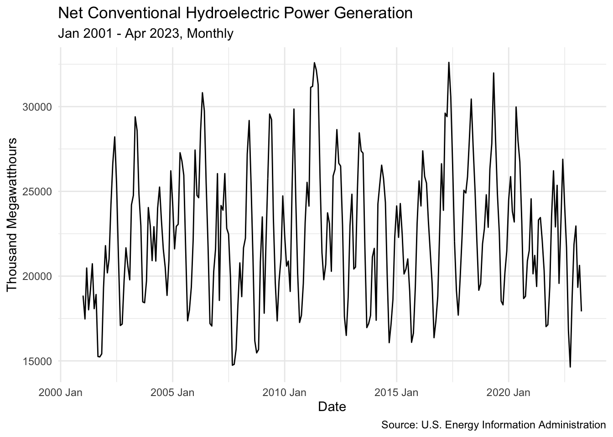
hydro |>
left_join(plants_t) |>
select(Date, MWH, Count) |>
left_join(prcpt2) |>
mutate(Count = ifelse(is.na(Count),
1351,
Count)) |> #inputting missing 4 obs with the last ob
rename(Precipitation = Value) -> hydro_compJoining with `by = join_by(Date)`
Joining with `by = join_by(Date)`head(hydro_comp)# A tsibble: 6 x 4 [1M]
Date MWH Count Precipitation
<mth> <dbl> <dbl> <dbl>
1 2001 Jan 18852. 1337 1.85
2 2001 Feb 17473. 1337 2.21
3 2001 Mar 20477. 1337 2.57
4 2001 Apr 18013. 1337 2.1
5 2001 May 19176. 1337 2.78
6 2001 Jun 20728. 1337 3.12I am combining all the data into one tsibble.
hydro_comp |>
pivot_longer(c(MWH, Count, Precipitation)) |>
ggplot(aes(x = Date, y = value)) +
geom_line() +
facet_grid(name ~ ., scales = "free_y") + ylab("")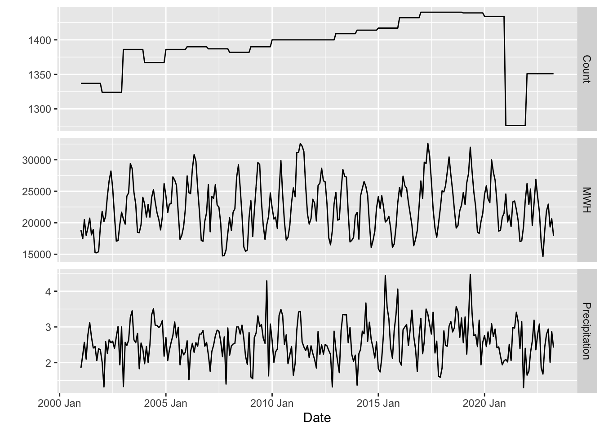
hydro |> gg_tsdisplay(MWH,
plot_type='partial', lag_max = 24)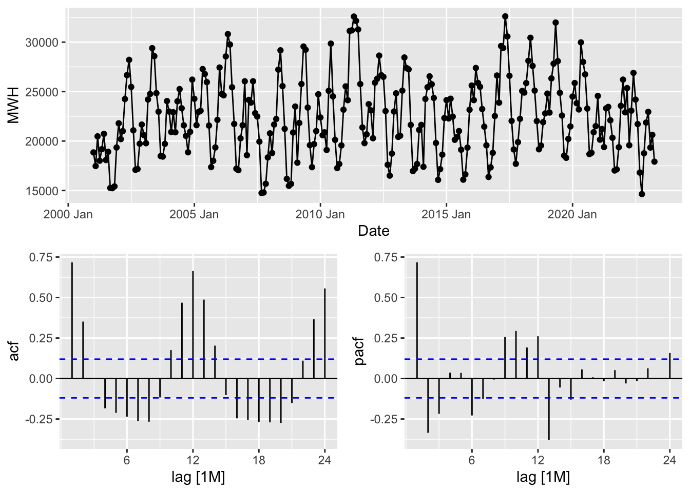
hydro |>
model(stl = STL(MWH)) |>
components() |>
gg_subseries(season_year) +
theme(axis.text.x = element_text(size = 5))
hydro |>
model(stl = STL(MWH)) |>
components() |>
autoplot()Warning: Ignoring unknown parameters: linewidth
STL decomposition shows high seasonality of the data.
total_obs.hydro = dim(hydro_comp)[1] #puts n of obs into total_obs
train_obs = total_obs.hydro * 0.8
test_obs = total_obs.hydro - train_obs
hydro_train = head(hydro_comp, train_obs)
hydro_test = tail(hydro_comp, test_obs)hydro_train |>
pivot_longer(c(MWH, Count, Precipitation)) |>
ggplot(aes(x = Date, y = value)) +
geom_line() +
facet_grid(name ~ ., scales = "free_y") + ylab("")
nn_model = hydro_train |>
model(nnetar = NNETAR(MWH ~ Count + Precipitation),
Arima.reg = ARIMA(MWH ~ Count + Precipitation))nn_model# A mable: 1 x 2
nnetar Arima.reg
<model> <model>
1 <NNAR(1,1,2)[12]> <LM w/ ARIMA(1,0,0)(1,1,0)[12] errors>A mable: 1 x 2 nnetar Arima.reg
hydro_train[214,"Count"]# A tibble: 1 × 1
Count
<dbl>
1 1440mean_prcpt = mean(hydro_train$Precipitation)
hydro_train2 = hydro_train[-214,]f_scenarios_hydro <- scenarios(
Mean = new_data(hydro_train, 54) |>
mutate(Count = 1440,
Precipitation = mean_prcpt))start_time = Sys.time()
nn_fit = nn_model |>
forecast(new_data = f_scenarios_hydro)
print(Sys.time() - start_time)Time difference of 3.74252 minshydro_train |>
autoplot(MWH) +
autolayer(nn_fit) +
labs(title = "Net Conventional Hydroelectric Power Generation
NN Forecast",
subtitle = "Jan 2001 - Apr 2023, Monthly",
y = "Thousand Megawatthours",
x = "Date",
caption = "Source: U.S. Energy Information Administration") +
theme_minimal()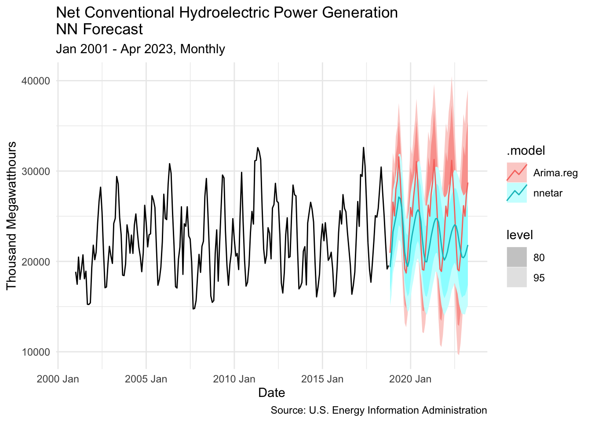
hydro_test |>
autoplot(MWH) +
autolayer(nn_fit) +
geom_line(aes(y = MWH)) +
labs(title = "Net Conventional Hydroelectric Power Generation
NN Forecast",
subtitle = "Nov 2018 - Apr 2023, Monthly",
y = "Thousand Megawatthours",
x = "Date",
caption = "Source: U.S. Energy Information Administration") +
theme_minimal()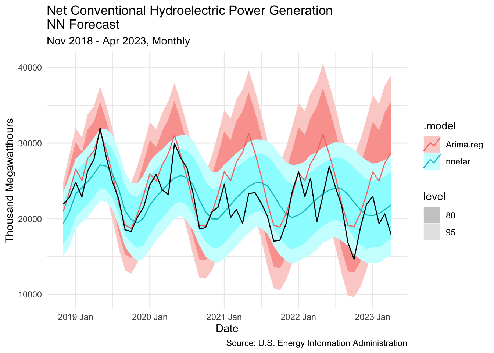
nn_fit |>
accuracy(hydro_comp) |>
select(.model, RMSE, MPE)# A tibble: 2 × 3
.model RMSE MPE
<chr> <dbl> <dbl>
1 Arima.reg 3688. -11.4
2 nnetar 2929. -2.86Neural Networks predict better.
For convenience I am using only the last five years of observation.
hydro_train2 = hydro_comp[208:256,]
hydro_test2 = tail(hydro_comp, 12)
hydro_comp2 = hydro_comp[208:268,]lagged_arima <- hydro_train2 |>
# Restrict data so models use same fitting period
mutate(MWH = c(NA, NA, NA, NA, NA, MWH[6:49])) |>
model(
lag1 = ARIMA(MWH ~ pdq(d = 0)
+ lag(Precipitation)
+ lag(Count)),
lag2 = ARIMA(MWH ~ pdq(d = 0) + lag(Precipitation) +
lag(Precipitation, 2) + lag(Count) + lag(Count, 2)),
lag3 = ARIMA(MWH ~ pdq(d = 0) + lag(Precipitation) +
lag(Precipitation, 2) + lag(Precipitation, 3) + lag(Count) + lag(Count, 2) + lag(Count, 3)),
lag4 = ARIMA(MWH ~ pdq(d = 0) + lag(Precipitation) +
lag(Precipitation, 2) + lag(Precipitation, 3) + lag(Precipitation, 4) + lag(Count) + lag(Count, 2) + lag(Count, 3) + lag(Count, 4)),
lag5 = ARIMA(MWH ~ pdq(d = 0) + lag(Precipitation) +
lag(Precipitation, 2) + lag(Precipitation, 3) + lag(Precipitation, 4) + lag(Precipitation, 5) + lag(Count) + lag(Count, 2) + lag(Count, 3) + lag(Count, 4) + lag(Count, 5))
)
glance(lagged_arima)# A tibble: 5 × 8
.model sigma2 log_lik AIC AICc BIC ar_roots ma_roots
<chr> <dbl> <dbl> <dbl> <dbl> <dbl> <list> <list>
1 lag1 3085088. -286. 579. 581. 586. <cpl [0]> <cpl [1]>
2 lag2 3207038. -285. 583. 585. 592. <cpl [0]> <cpl [1]>
3 lag3 3136314. -284. 584. 589. 597. <cpl [0]> <cpl [1]>
4 lag4 2900213. -282. 583. 592. 599. <cpl [0]> <cpl [1]>
5 lag5 2973819. -281. 585. 598. 605. <cpl [0]> <cpl [1]>Based on AICc, I am choosing lag1.
nn_model2 = hydro_train2 |>
model(nnetar2 = NNETAR(MWH ~ Count + Precipitation),
Arima.reg2 = ARIMA(MWH ~ lag(Count) + lag(Precipitation),
stepwise = FALSE,
approx = FALSE),
ETS = ETS(MWH))lagged_count = hydro_train2$Count[38:49]
lagged_prcpt = hydro_train2$Precipitation[38:49]
#I am creating a list of the last 12 values from the hydro_train2.
mean_count = rep(mean(mean(hydro_train2$Count)), times=12)
mean_prcpt = rep(mean(mean(hydro_train2$Precipitation)), times=12)
#I am creating a list of the 12 repeating values equaling the average observation from the training set.
future_scenarios <- scenarios(
Lagged = new_data(hydro_train2, 12) |>
mutate(Count=lagged_count,
Precipitation = lagged_prcpt),
Mean = new_data(hydro_train2, 12) |>
mutate(Count = mean_count,
Precipitation = mean_prcpt),
names_to = "Forecast Scenarios")
#By putting lagged_vars, I am using the last 12 values of hydro_train2 as the values in the future_scenarios. This way I am creating new values lagged at 12: April 2023 will equal April 2022, etc. Thus, I can use them as the predictors for my forecast. The same is with the Mean values.start_time = Sys.time()
nn_fit2 = nn_model2 |>
forecast(new_data = future_scenarios)
print(Sys.time() - start_time)Time difference of 2.633055 minshydro_test2 = hydro_test2[,c("Date","MWH")]head(hilo(nn_fit2))# A tibble: 6 × 9
`Forecast Scenarios` .model Date MWH .mean Count Precipitation
<chr> <chr> <mth> <dist> <dbl> <dbl> <dbl>
1 Lagged nnetar2 2022 May sample[5000] 21545. 1276 2.98
2 Lagged nnetar2 2022 Jun sample[5000] 21850. 1276 2.97
3 Lagged nnetar2 2022 Jul sample[5000] 21306. 1276 3.41
4 Lagged nnetar2 2022 Aug sample[5000] 20481. 1276 3.14
5 Lagged nnetar2 2022 Sep sample[5000] 17878. 1276 2.39
6 Lagged nnetar2 2022 Oct sample[5000] 17819. 1276 3.15
# … with 2 more variables: `80%` <hilo>, `95%` <hilo>Here is the plot of the training data and the forecast.
hydro_train2 |>
autoplot(MWH) +
autolayer(nn_fit2, level = NULL)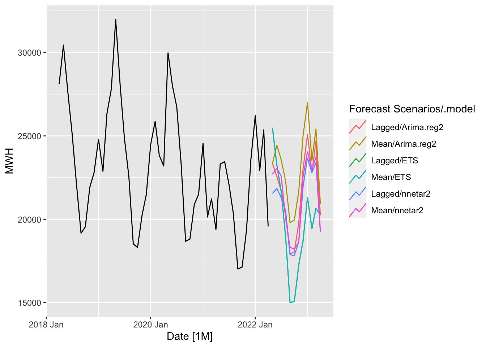
Here is the plot of the actual data and the forecast.
hydro_test2 |>
autoplot(MWH) +
autolayer(nn_fit2, level = NULL)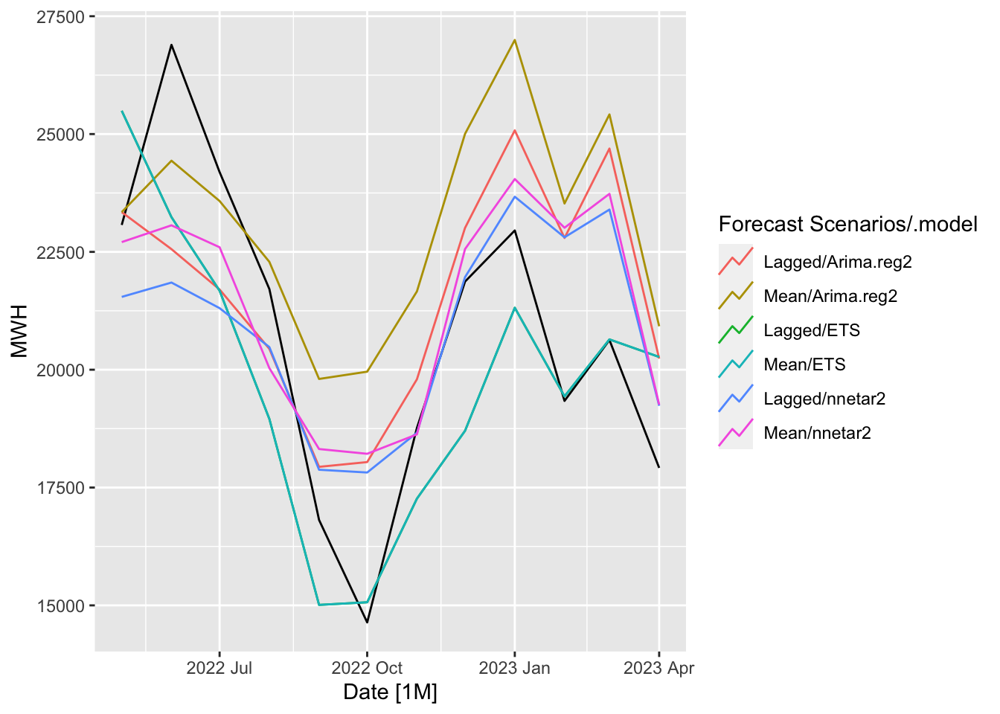
nn_fit2 %>%
filter(`Forecast Scenarios`=="Lagged") |>
accuracy(hydro_comp2) |>
select(.model, RMSE, MPE)# A tibble: 3 × 3
.model RMSE MPE
<chr> <dbl> <dbl>
1 Arima.reg2 2585. -5.78
2 ETS 2181. 4.16
3 nnetar2 2430. -2.24nn_fit2 %>%
filter(`Forecast Scenarios`=="Mean") |>
accuracy(hydro_comp2) |>
select(.model, RMSE, MPE)# A tibble: 3 × 3
.model RMSE MPE
<chr> <dbl> <dbl>
1 Arima.reg2 3267. -12.9
2 ETS 2181. 4.16
3 nnetar2 2270. -4.33We can see that ETS has the lowest RMSE, while NNETAR with external regressors lagged at 12 has the lowest MPE.
Now I creating an ensemble model that averages the predictions.
start_time = Sys.time()
nn_ensemble = hydro_train2 |>
model(Ensemble = (NNETAR(MWH ~ Count + Precipitation) +
ARIMA(MWH ~ lag(Count) + lag(Precipitation),
stepwise = FALSE,
approx = FALSE) +
ETS(MWH))/3)
print(Sys.time() - start_time)Time difference of 6.888192 secsnn_fit2.nsmbl = nn_ensemble |>
forecast(new_data = future_scenarios)hydro_test2 |>
autoplot(MWH) +
autolayer(nn_fit2.nsmbl, level = NULL)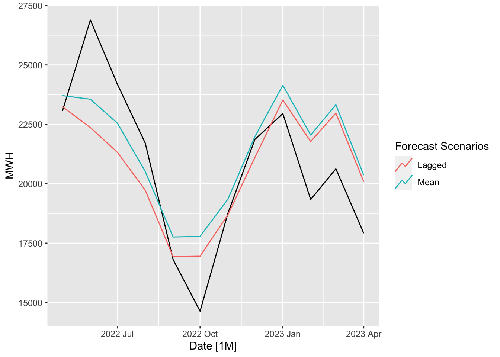
nn_fit2.nsmbl %>%
filter(`Forecast Scenarios`=="Mean") |>
accuracy(hydro_comp2) |>
select(.model, RMSE, MPE)# A tibble: 1 × 3
.model RMSE MPE
<chr> <dbl> <dbl>
1 Ensemble 2017. -4.57The average prediction, is the best one, in terms of variance (RMSE). However, NNETAR is still better in terms of bias (MPE).